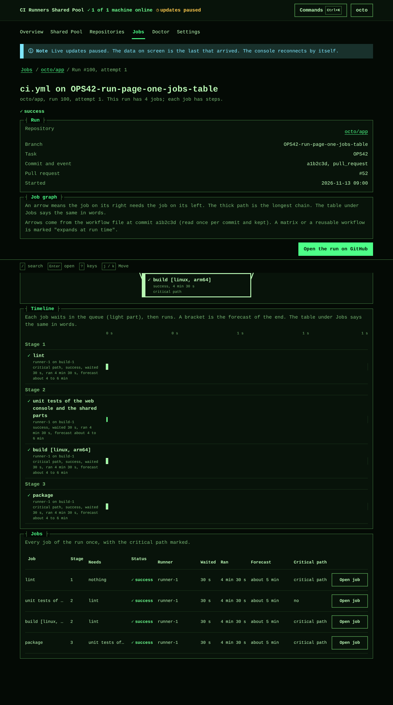
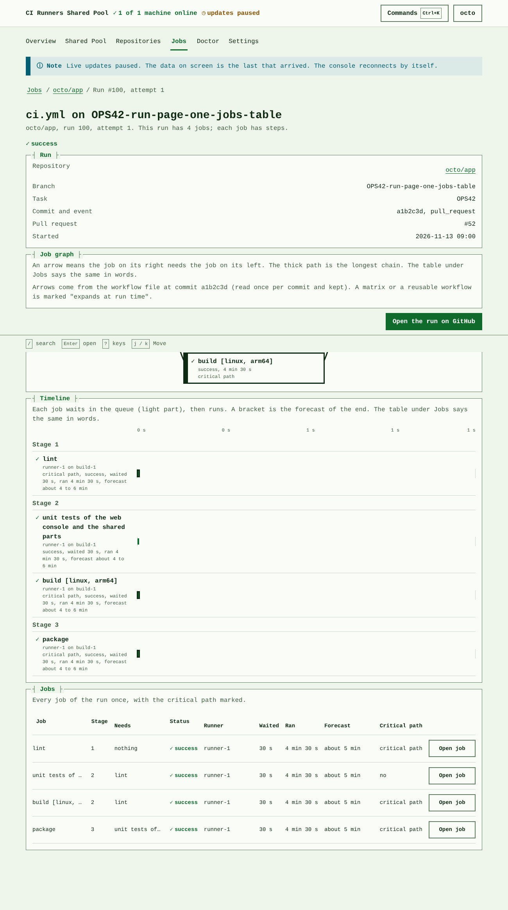
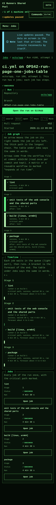
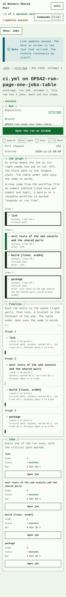

The Job graph and the Timeline no longer fold a "Show as table" each; both point to the Jobs table below the Timeline. The sticky header and action bar show inside the full-page shots at the scroll position of the capture.



